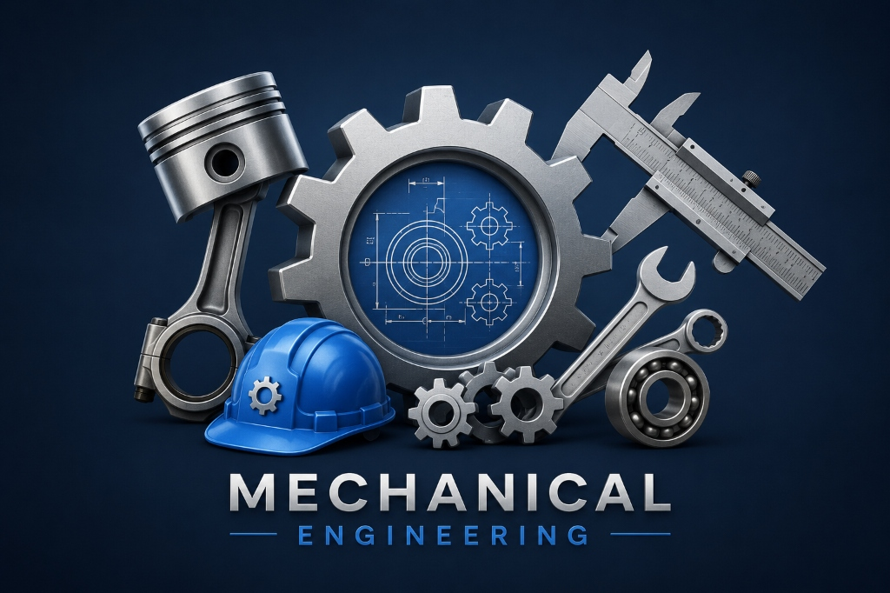

Md. Roju Ahomed
Lecturer · School of Civil and Mechanical Engineering, Curtin University
PhD, MSc, BSc in Mechanical Engineering. A proactive, driven mechanical engineer with 8+ years of experience across teaching, research and industry — specialising in vibration power harvesting, ocean wave energy converters and machine dynamics.

My Subjects
About
Md. Roju Ahomed
A proactive, driven and highly motivated mechanical engineer recognised for precision, strategic ingenuity and insight in project & task implementation. I have extensive training in effectively achieving and implementing engineering project plans & processes, whilst always seeking to gain business transformation, process optimisation, change objectives and capability development goals. I thrive in collaborating with teams, driving to achieve strategic objectives in excellence and transforming ideas into productive and rewarding results.
In a highly evolving and constantly changing business environment, I stand among highly capable engineering professionals who support and facilitate the progress of continuous improvement by utilising superior analytical skills and effective engineering knowledge. I am articulate, pragmatic, commercially minded, analytical, and solutions-focused, with exceptional drive and enthusiasm — experienced in collaborating with partners, suppliers, and stakeholders to empower and reinvigorate teams in achieving organisational objectives.

Experience
Lecturer
PresentCurtin University
Casual Academic
Part-timeCurtin University
- Workshop Project Manager for Engineering Foundations: Principles, Design, and Communication unit.
- Demonstrating Vibration, Linear Systems & Control, and Machine Dynamics labs.
- Marking assignments and reports.
★ Key achievement: gained valuable academic skills and successfully developed commitment, enthusiasm and time management.
Research Assistant
Part-timeCurtin University
- Designing, modelling, and Finite Element Analysis (FEA) of high-pressure vessels using AutoCAD, Autodesk Inventor and ANSYS.
- Studied Australian Standards (AS) and procedures on high-pressure vessel design and ensured compliance.
- Analysed system behaviour and optimised mechanical designs.
- Report writing.
PhD Research Project — Vibration Power Harvesting, Ocean Wave Energy Converter
Full-timeCurtin University
- Analytical, numerical and experimental modelling of single-, two- and three-degree-of-freedom magnetic spring-based non-linear oscillator systems to harness energy from ocean waves.
- Vibration analysis and signal processing.
- Study of magnetic restoring forces and their linear and nonlinear coefficients.
- Dynamics analysis of nonlinear oscillator systems with and without electromechanical coupling.
★ Key achievement: developed proficiency in Finite Element Analysis (FEA), manufacturing specifications, design & validation, and parametric study & optimisation.
Industrial Internship
Part-timeT&G Corporation Pty Ltd
- Designed and developed mining equipment for crushing plants using AutoCAD, SolidWorks and ProSteel.
- Designed conveyor systems using Helix DeltaT Online Conveyor Design Software.
- Load calculation and technical report writing using Mathcad.
- Studied company standards and procedures and ensured compliance with AS during design.
- Assisted in preparing technical reports and training materials.
- Vibration analysis of the cone crusher using MATLAB and LabVIEW.
Casual Academic
Part-timeCentral Queensland University
- Demonstrating Linear Systems & Control and Fluid Dynamics workshops.
- Marking assignments and reports.
Assistant Professor
Full-timeBCMC College of Engineering & Technology
- Taught undergraduate and diploma courses across Mechanical Engineering, meeting the institution's curricular needs.
- Assisted the continuous development of the department's programs.
Teaching Assistant
Part-timeInternational Islamic University Malaysia
- Taught undergraduate courses including Machine Design, Robotics, Materials Engineering, Fluid Mechanics and Automotive Engineering.
- Marking assignments and reports.
Research Assistant
Full-timeInternational Islamic University Malaysia
- Design and implementation of an energy-generated magneto-rheological (MR) damper for vehicle suspension systems.
- Preparing research proposals.
- Study of MR fluid-based devices.
- Report writing.
Research Engineer — Magnetorheological Fluid (MRF) Damper
Full-timeMalaysia-Japan International Institute of Technology (MJIIT)
- Supported the research project "Design and implementation of energy generated magneto-rheological damper for vehicle suspension systems."
- Attended project meetings, prepared progress reports, and performed administrative duties to help achieve project objectives.
Mechanical Engineering Intern
Full-timeBangladesh Industrial Technical Assistance Centre (BITAC)
- Designing and manufacturing, pattern making, foundry.
- Machine shop, automobile mechanical drafting.
- CNC machining centre operation & practice.
★ Key achievement: gained practical knowledge and skills for improving industrial production.